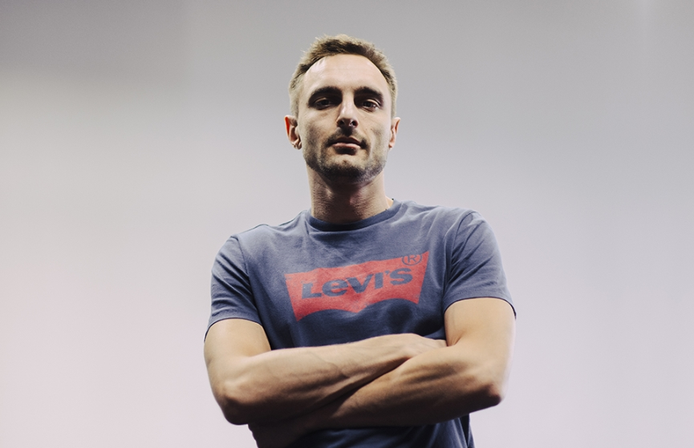

Основатель диджитал-студии FINCH — о веб-дизайне в России и США
Программист Дмитрий Щипачев руководит агентством FINCH, среди проектов которого — сайт «Спартака» и приложение для ТНТ-Club. «РБК Стиль» узнал у него, что происходит с веб-пространством и как его меняет мир мобильных приложений.
Прихожая офиса FINCH встречает горой ботинок, ворохом пуховиков и мотоциклом BMW. Над гардеробной-гаражом ютится небольшой оупенспейс и директорский кабинет. В нем — уютный полумрак. Так легче работается. Дмитрий Щипачев руководит студией разработки почти 12 лет, все успевает благодаря мотоциклу и мыслит стратегически. Его студия FINCH сконструировала и запустила сайты для «Дома-2», «Столото» и футбольного клуба «Спартак», параллельно переключаясь на приложения для смартфонов. С Дмитрием мы поговорили о том, как устроен диджитал-бизнес в России и чем он отличается от западного.
О приложениях и сайтах
— Дизайн приложений — это то, чем хочется заниматься, в отличие от сайтов. Потому что вся эстетика мобильных устройств располагает к тому, чтобы создавать красивые приложения. Плюс нам комфортнее работать с тем характером пользовательского потребления, которым приложения отличаются от веба.
— Дополненная и виртуальная реальность дают только вау-фактор. Единственная область, в которой он применим, — это реклама.
— Рекламой заниматься мы не любим. Никакой социально полезной функции в этом нет. Интереснее решить даже самую простую задачу, с которой пользователь сталкивается ежедневно, чем создать самый успешный рекламный кейс.
— Ни один продукт не бесплатный. С тебя все равно получат деньги. Встроенная ли это покупка, или это подписка, или пользовательские данные, или реклама. Или все вместе. Ты все равно платишь за то, чем пользуешься в интернете. Все мы помним, как появился Gmail с бесплатными 10 Гб на диске, когда Mail.Ru давал только 200 Мб. И все сразу полезли в Google. Сейчас мы понимаем, что все это было не просто так. Google знал уже тогда, что пользовательские данные будут самым ценным товаром, видел будущее.
— О понятии статусности по отношению к сайтам сложно говорить. Мы измеряем любую вещь неопределенным количеством параметров. И мы не знаем, какие параметры для какого кейса рассматривались как приоритетные. Например, наш сайт для «Спартака» не слишком отличался посещаемостью, но для них этот проект создавался с целью привести их нынешнее IT-окружение в соответствие со статусом бренда. Раньше бросалось в глаза несоответствие между величиной и популярностью клуба и его отражением в интернете.
— Сайты, как и приложения, должны со временем упрощаться в плане разнообразия дизайна. С одной стороны, гайдлайны операционных систем становятся все более продуманными, а сами приложения становятся все менее разнообразными, стремясь соответствовать этим гайдлайнам. И это очень правильно.
— С сайтами произошло бы то же самое, что и с приложениями, если бы были единые технологии оформления. Но таких технологий нет и никогда не будет, потому что все, что с ними связано — это языки, HTML-стандарты, — управляется консорциумами, которые никогда не договорятся об унификации.
— HTML должен умереть, он как каменное колесо для индустрии. И веб-дизайн тоже должен исчезнуть. Я могу легко представить ситуацию, когда через два-три года внешний вид сайта не будет программироваться создателем. Разработчик будет только компоновать составляющие, а операционная система отобразит конечный результат. Уже сейчас есть тому примеры: InstantView в Facebook, сервис Telegra.ph — в Telegram.
О российском диджитал-сегменте
— Российский потребитель диджитала очень сильно избалован. Не только в плане дизайна. У нас и скорость интернета, и его доступность, и навыки дизайнеров и программистов выше, чем в Европе или США. По части веб-дизайна мы более мобильны. Если взять дизайн сайта газет Boston Globe или Wall Street Journal, можно заметить, что за Атлантикой дизайнеры и программисты меняются очень медленно. За 20 лет максимум они чуть-чуть изменят шрифты и внедрят адаптив для смартфонов.
— Я работал в Америке в веб-дизайне и заметил, что делают они все очень качественно. Например, для интро сайта они могут арендовать целую площадку и три дня снимать фильм, чтобы потом превратить его в мультфильм. У нас бы сел моушен-дизайнер и за два часа нарисовал силуэты. То есть они подходят с точки зрения качества, но очень консервативно.
— У нас люди любят всякие красивые вещи. Для нас первична форма, а не содержание. Поэтому наш дизайн «лучше» смотрится. Ну и мы больше нацелены на вау-фактор. Американца ты спросишь, почему сайт New York Times такой неудобный, и он просто не поймет тебя: вот новости, вот текст, все работает. Что еще нужно? С другой стороны, на Западе, стараниями того же Apple, чувство стиля в диджитале выращивалось годами. Даже Android из соображений конкуренции начал подгонять свои гайдлайны, чтобы сделать красивый дизайн оболочки операционной системы и приложений. Потому что разница становилась со временем слишком очевидной.
— Большое внимание дизайну уделяют те, кто оперирует крупными платформами. И они тянут всех остальных за собой. В России таких гигантов нет, зато есть разработчики-энтузиасты, которые где-то что-то подсматривают и стараются переносить к нам в красивом виде.
О проектах FINCH
— Комплекс проектов для «Спартака» получился очень красивый. При запуске мы смогли защитить визуальную составляющую от разных опасностей, правда, она продержалась недолго. Это естественный процесс развития любого продукта — когда ты только что-то запускаешь, оно выглядит цельным. Но чем дальше от запуска, тем быстрее продукт разлагается и разрушается.
— Где-то полгода, и ты отпускаешь хватку, сползаешь и говоришь: все, окей, пусть будет что будет. И больше не следишь за консистентностью продукта (то есть за стабильной работой сайта. — «РБК Стиль»). Тут вопрос чисто финансовой мотивации.
— Поддерживать качество быстро растущего продукта — очень трудоемкая работа, результат которой не всегда понятен для клиента. У него, допустим, десять партнеров, каждый из которых требует запустить свои функции.
— Тяжело следить за тем, чтобы и работа делалась, и цельность сохранялась. Это ресурсоемкий процесс, и за него нужно доплачивать. И все равно в конце концов наступает момент, когда необходимо сделать полный редизайн и придумать все с нуля. Это происходит и из-за процессов внутри продукта, и из-за того, что внешняя среда тоже меняется: каждый год обновляются компоненты операционных систем, приложения, меняется конкурентное окружение, в целом развивается дизайн, возможности и так далее.
— После скачка проекта на следующий уровень снова начнется процесс разложения. Для долгоживущих проектов это нормально. И хороший клиент это понимает.

Меня зовут Дмитрий Хайретдинов, я один из соучредителей в FINCH. Пишите мне, если хотите обсудить проект. Мы умеем работать с банками, футбольными клубами, телеканалами — любыми компаниями, которые хотят работать с большим количеством аудитории.